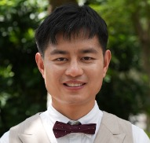

Debo Cheng (程德波)
|  |
Research Fellow |
About Me
I am a Research Fellow and Data Scientist at STEM, University of South Australia since May 2021. I earned my Ph.D. in the STEM at University of South Australia in 2021, co-advised by Prof. Jiuyong Li and Prof. Lin Liu.
Research Interests
My research interests lie in Artificial Intelligence, Machine Learning, and Data Analytics, with a focus on developing data-driven causal inference techniques that support evidence-based decision-making and tackle real-world problems. I aim to bridge the gap between theoretical causal frameworks and practical applications by developing methods that enable more robust and unbiased causal effect estimation. My work seeks to ensure that data-driven insights are not only accurate but also scientifically sound, thereby contributing to more reliable and generalisable findings across diverse research domains.
Recent Updates
- 10/2024, One paper on fairness was accepted by KBS Journal. Congrats to Chengyu.
- 10/2024, One paper on fairness was accepted by Neural Networks Journal. Congrats to Guixian.
- 09/2024, One paper on recommender systems was accepted by ICDM2024. Congrats to Boquan.
- 2024 ...
CV Download
My CV can be found at [My CV].
Visit Tracker